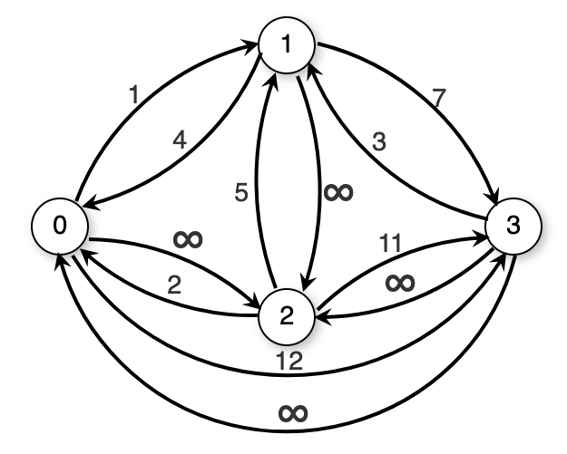

12.10* Floyd’s algorithm: All-pairs shortest paths
We next consider the problem of finding the shortest distance between all pairs of vertices in the graph, called the all-pairs shortest paths problem. To be precise, for every v, w \in \mathbf{V}, calculate d(v, w).
One solution is to run Dijkstra’s
algorithm |\mathbf{V}| times, each
time computing the shortest path from a different start vertex. If \mathbf{G} is sparse (that is, |\mathbf{E}| \in O(|\mathbf{V}|)) then this
is a good solution, because the total cost will be O(|\mathbf{V}|^2 + |\mathbf{V}||\mathbf{E}| \log
|\mathbf{V}|) = O(|\mathbf{V}|^2 \log(|\mathbf{V}|)) for the
version of Dijkstra’s algorithm based on priority queues. For a dense
graph, the priority queue version of Dijkstra’s algorithm yields a cost
of O(|\mathbf{V}|^3
\log(|\mathbf{V}|)), but the version using minVertex
yields a cost of O(|\mathbf{V}|^3).
Another solution that limits processing time to O(|\mathbf{V}|^3) regardless of the number of edges is known as Floyd’s algorithm. It is an example of dynamic programming. The chief problem with solving this problem is organising the search process so that we do not repeatedly solve the same subproblems. We will do this organisation through the use of the k-path. Define a k-path from vertex v to vertex w to be any path whose intermediate vertices (aside from v and w) all have indices less than k. A 0-path is defined to be a direct edge from v to w. Figure 12.11 illustrates the concept of k-paths.

Define D_k(v, w) to be the length of the shortest k-path from vertex v to vertex w. Assume that we already know the shortest k-path from v to w. The shortest (k+1)-path either goes through vertex k or it does not. If it does go through k, then the best path is the best k-path from v to k followed by the best k-path from k to w. Otherwise, we should keep the best k-path seen before. Floyd’s algorithm simply checks all of the possibilities in a triple loop. Here is the implementation for Floyd’s algorithm. At the end of the algorithm, array D stores the all-pairs shortest distances.
floyd(graph):
distances = new Map() of vertex pairs to distances
for each v in graph.vertices():
for each w in graph.vertices():
distances.put((v, w), ∞)
distances.put((v, v), 0)
for each e in G.outgoingEdges(v):
distances.put((v, e.end), e.weight)
// Compute all k-paths
for each k in graph.vertices():
for each v in graph.vertices():
for each w in graph.vertices():
dist = distances.get(v, k) + distances.get(k, w)
if dist < distances.get(v, w):
distances.put((v, w), dist)
return distancesClearly this algorithm requires O(|\mathbf{V}|^3) running time, and it is the best choice for dense graphs because it is (relatively) fast and easy to implement.